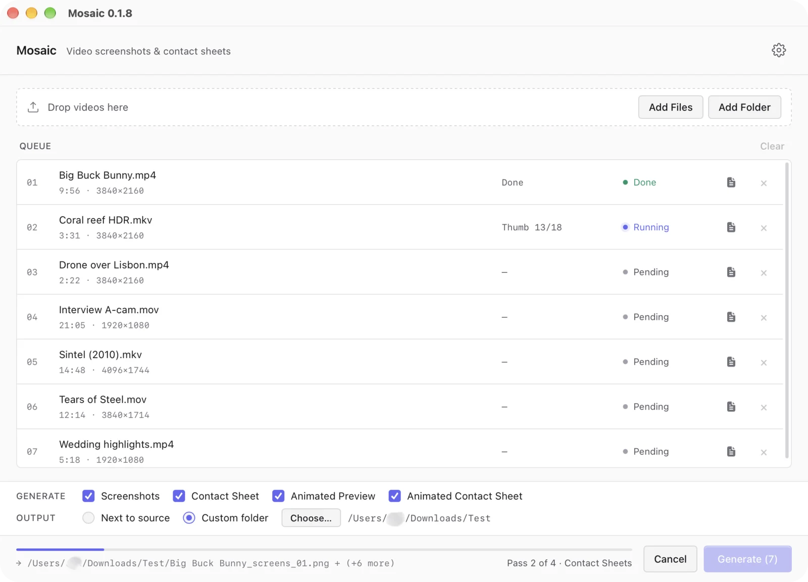
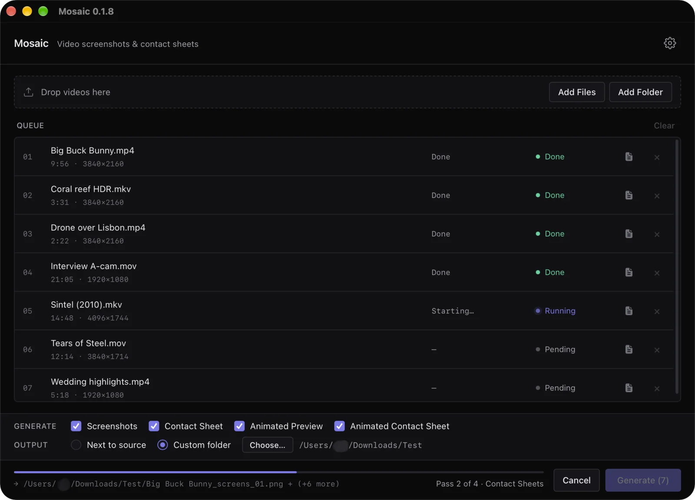
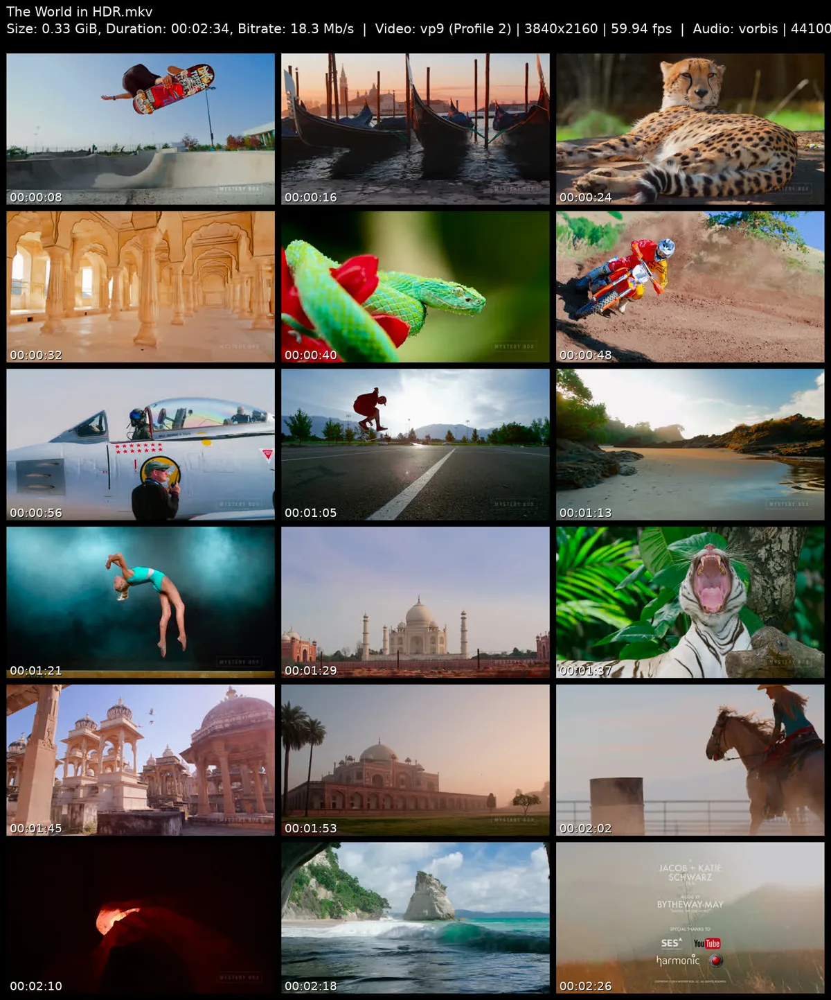
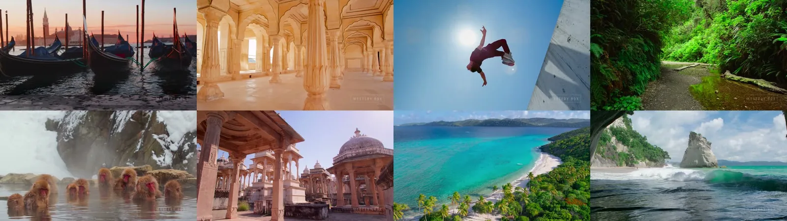
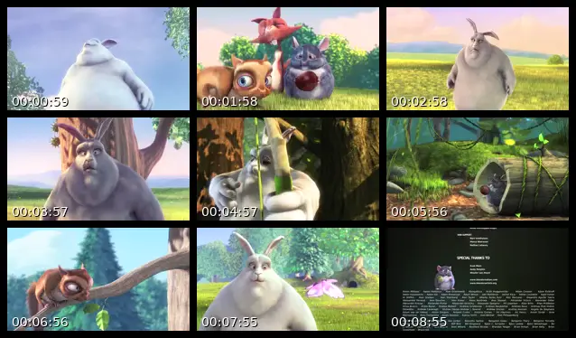
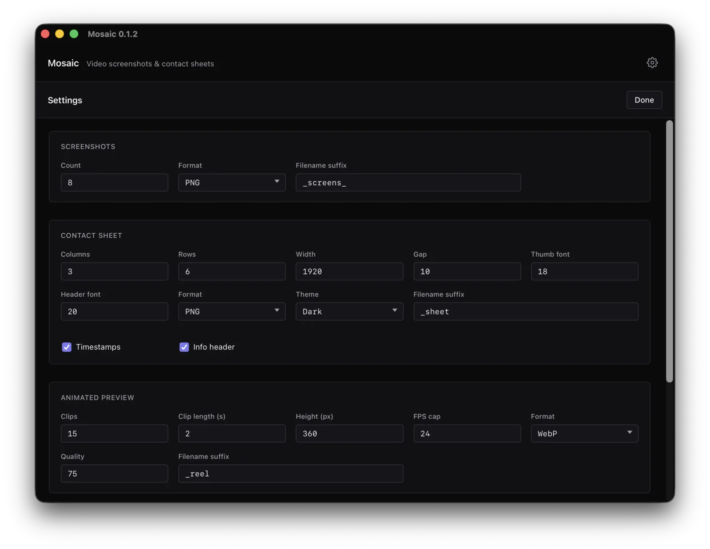

Mosaic guide
How to install Mosaic, set up ffmpeg, and make contact sheets, screenshots and animated previews from your videos.
Install
Download the installer for your system. Every build is also on the GitHub releases page.
macOS
Apple Silicon and Intel (.dmg)Windows
x64 installer (.exe) x64 for deployment tools (.msi) Arm installer (.exe) Arm for deployment tools (.msi)Linux
Any distribution (.AppImage) Debian, Ubuntu, Mint (.deb) Fedora, RHEL, openSUSE (.rpm)macOS
Open the .dmg and drag Mosaic to Applications. One download runs on both Apple Silicon and Intel Macs.
Windows
Run the installer. Use the Arm version on Snapdragon and other Arm laptops.
Windows may say “Windows protected your PC”. Click More info, then Run anyway. The Windows builds aren't code-signed yet.
Linux
chmod +x Mosaic_*_amd64.AppImage && ./Mosaic_*_amd64.AppImage # AppImage
sudo dpkg -i Mosaic_*_amd64.deb # Debian, Ubuntu
sudo rpm -i Mosaic-*.x86_64.rpm # Fedora, RHELRequirements
Mosaic uses ffmpeg to read and render video and MediaInfo for file details. Install both so that ffmpeg, ffprobe and mediainfo are on your PATH.
macOS
brew install ffmpeg-full mediainfoUse ffmpeg-full, not plain ffmpeg. Homebrew's default build can't draw timestamps, write WebP or convert HDR. Mosaic picks ffmpeg-full automatically when it's installed.
Windows
winget install Gyan.FFmpeg MediaArea.MediaInfoOr with Chocolatey: choco install ffmpeg-full mediainfo-cli.
Linux
sudo apt install ffmpeg mediainfo # Debian, Ubuntu
sudo dnf install ffmpeg mediainfo # Fedora
sudo pacman -S ffmpeg mediainfo # ArchFirst run
- Add videos. Drag files or folders onto the window, or use Add Files and Add Folder. Folders are searched all the way down.
- Pick what to make. Tick any of Screenshots, Contact Sheet, Animated Preview and Animated Contact Sheet.
- Pick where it goes. Next to each video, or all in one folder.
- Click Generate. Each file shows its progress, and you can cancel at any time.


Output types
Contact sheets
A grid of frames taken evenly through the video, each stamped with its time, under a header with the file's size, length and codecs. Good for cataloging a library or checking what a file holds without playing it.
You can set the rows and columns, width, PNG or JPEG, quality, the header and the timestamps.

Screenshots
Full-size frames taken at even intervals, saved as separate files named after the video. You choose how many, PNG or JPEG, and the quality.

Animated previews
Short clips from through the video, joined into one looping animation in WebP, WebM or GIF. You choose the number of clips, their length, the frame rate, the size and the quality.
Animated contact sheets
A contact sheet where every cell is a short looping clip, so you see the whole video moving at once. Saved as WebP, with the same grid settings as a contact sheet plus clip length and frame rate.

Settings
Click the gear icon to change the defaults for each output type: size, quality, file name suffix, fonts and header fields. Settings are kept between launches, and the theme follows your system.

MediaInfo viewer
Click the file icon on any row in the queue to see everything MediaInfo knows about that video: codecs, bitrate, HDR format, audio tracks and languages. A copy button puts it on the clipboard for bug reports or forum posts.
Updates
Each time Mosaic opens, it asks GitHub whether a newer version exists. If one does, it offers to install it, checks the download's signature, and restarts. Nothing about your videos is sent.
Command line
mosaic-cli makes the same four outputs from scripts and servers.
# macOS and Linux
curl -LsSf https://mosaicvideo.github.io/install.sh | sh
# Windows (PowerShell)
irm https://mosaicvideo.github.io/install.ps1 | iexEvery command and option is in the CLI reference.
FAQ
Why do I have to install ffmpeg myself?
Bundling ffmpeg would triple the download and tie you to one build. Keeping it separate lets you update it on your own. When Mosaic starts, it checks for ffmpeg, ffprobe and mediainfo. If one is missing it shows how to install it, and if your ffmpeg can't do something an output needs, it says what to install instead.
macOS says Apple could not verify Mosaic is free of malware
Mosaic for macOS is signed and notarized by Apple, so you shouldn't see this. If you do, right-click the app, choose Open once, and report it on GitHub.
Windows SmartScreen blocks the installer
The Windows builds aren't code-signed yet, so SmartScreen warns about them. Click More info, then Run anyway. Every release is built by GitHub Actions from the public source code.
Where are my files saved?
Either next to each video, or all in one folder you pick, using the choice at the bottom of the window. Files are named after the video with a suffix, such as holiday_sheet.png. If a file with that name exists, Mosaic adds (1), (2) and so on, so nothing is overwritten.
Can I cancel a job partway through?
Yes. Click Cancel. Finished files are kept, and the file being worked on is removed rather than left half-written.
My HDR video comes out with strange colors
Converting HDR10 and HLG needs an ffmpeg with the zscale filter. On macOS, install ffmpeg-full; Homebrew's default ffmpeg lacks it.
brew install ffmpeg-fullDolby Vision Profile 5 is corrected by Mosaic itself and works with any ffmpeg.
Do I need MediaInfo as well?
Yes. Mosaic uses it for the contact sheet header (HDR format, audio codec, channels, language) and the MediaInfo viewer. See Requirements for the install command on your system.
Which video formats work?
Anything ffmpeg can read, including MP4, MKV, MOV, AVI, WebM, M4V, MXF, TS and M2TS.
How big are the output files?
Roughly 200 KB to 5 MB for a contact sheet, 50 KB to 2 MB per screenshot, 0.5 to 10 MB for an animated preview, and 1 to 20 MB for an animated contact sheet. Size and quality are adjustable in settings.
Does Mosaic upload my videos?
No. Everything runs on your computer. The only network request is the update check to GitHub. There are no analytics and no account.